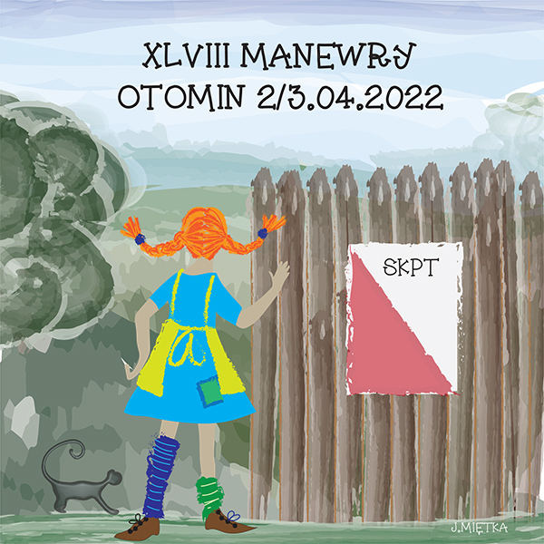
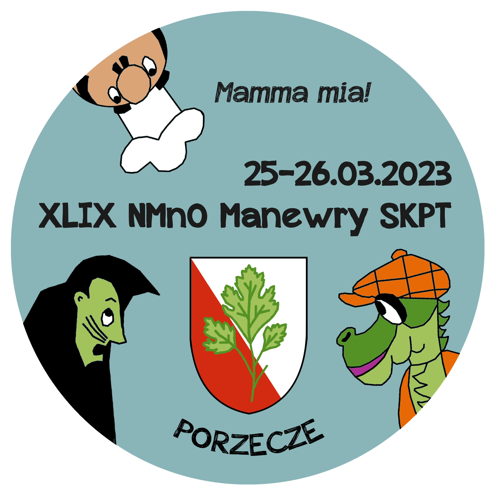
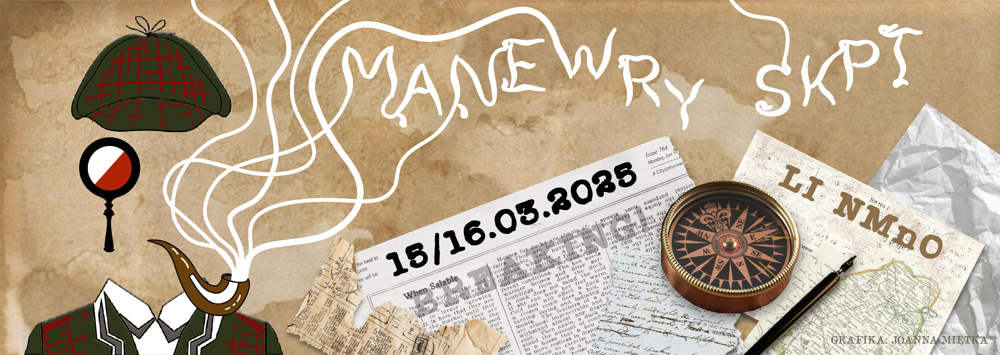
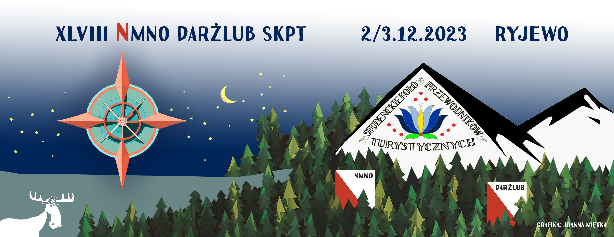

Zajmuję się grafiką cyfrową, tworząc projekty łączące estetykę z funkcjonalnością. Pracuję z kompozycją, kolorem oraz typografią.
Grafika to dla mnie sposób opowiadania historii za pomocą obrazu.
Moje podejście do projektowania graficznego opiera się na trzech kluczowych zasadach:
Kreatywne podejście
Spójność wizualna
Dbałość o detale
Tworzę grafiki m.in. na tematyczne wydarzenia turystyczne związane z Nocnymi Marszami Na Orientację. Poniżej przedstawiam kilka moich pomysłów z ubiegłych lat.



Fotografia i podróże
Podróże są dla mnie źródłem inspiracji wizualnej i twórczej. Każdy odwiedzony kraj to nowe faktury, światło i klimat. Doświadczenia zdobyte podczas podróży po Azji — m.in. Gruzji, Armenii, Iranie, Kirgistanie, Malezji czy Indonezji — stanowią ważny element mojego procesu projektowego i rozwijają mnie, i moje patrzenie na świat..
Fotografia jest dla mnie narzędziem obserwacji i analizy. Uczy uważności na detal, kompozycji oraz relacji między przestrzenią a człowiekiem. Kadry z podróży często stają się punktem wyjścia do dalszej pracy graficznej — inspirują do wyboru palet kolorystycznych, kompozycji oraz narracji wizualnej projektów. Dokumentowanie miejsc i kultur pozwala mi budować autentyczne, oparte na doświadczeniu rozwiązania wizualne.
W projektowaniu graficznym czerpię z różnorodności kultur, architektury i natury, które miałam okazję obserwować z bliska. Łączenie fotografii z projektowaniem daje mi możliwość tworzenia spójnych, przemyślanych form wizualnych. Podróże pozostają dla mnie stałym źródłem inspiracji.